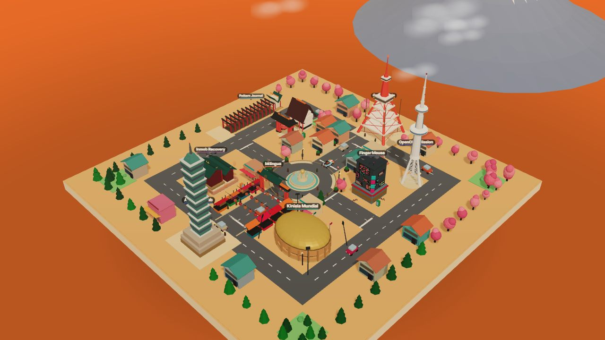
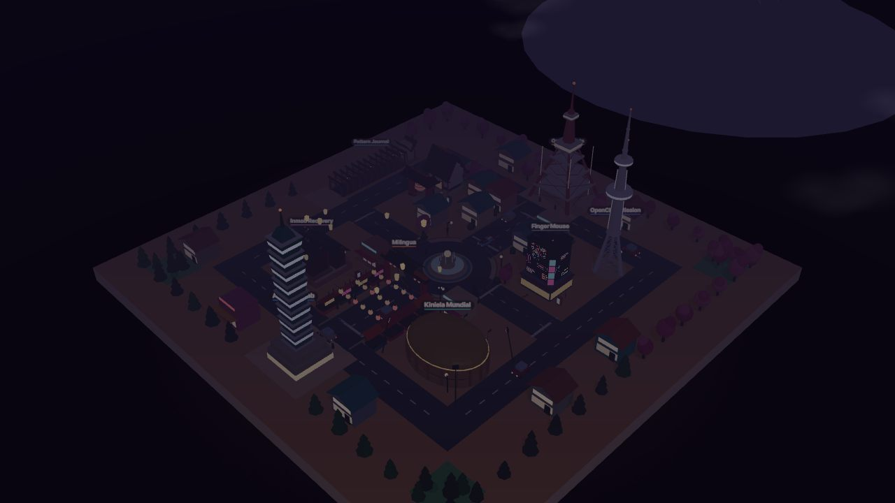
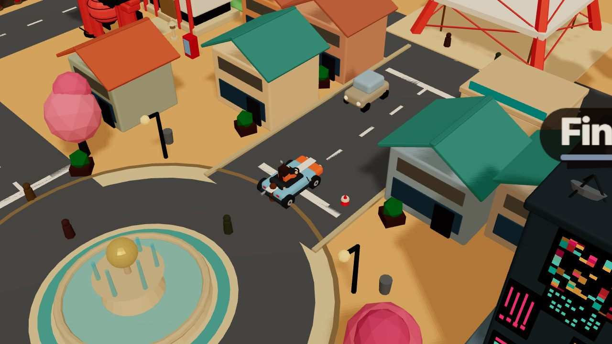
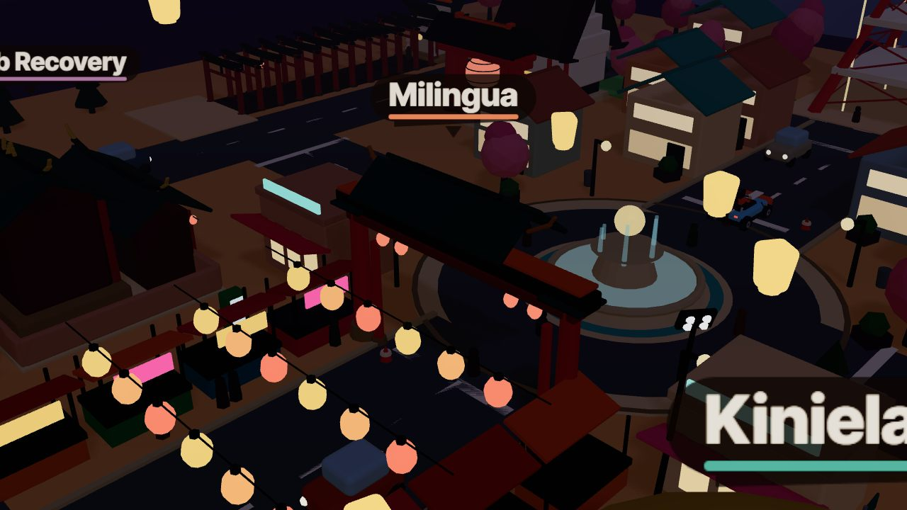

The 3D mode of this portfolio is a procedural isometric city — Tokyo Tower, Taipei 101 and six other landmarks, each hosting one real project, connected by drivable streets with traffic, pedestrians and a day/night cycle. It is 4,993 lines of vanilla ES modules with a single runtime dependency (three.js), and it is engineered to a measured frame budget instead of a vibe.
Measured July 2026 with renderer.info on an isolated scene render (Chrome; the whole-island numbers use the overview camera so nothing is frustum-culled). Reproducible in the live site console — see §07.
A 3D portfolio is a risky pitch: if it stutters on a recruiter's laptop, it argues against the engineer who built it. So the constraints were set up front:
prefers-reduced-motion support.

projects.data.js is the single source of truth: each entry declares its landmark
builder, world position, proximity radius, accent color and card copy. The world generator,
HUD cards, minimap dots, visit tracker and guide arrow all derive from it — adding a project
is one data entry plus one procedural builder function.
The runtime is ~38 small modules in plain ES: core/ (renderer tiers, camera rig,
post pipeline, day/night, synth audio), world/factory/ (procedural builders for
landmarks, buildings, traffic, trees), vehicle/ (arcade controller with per-vehicle
handling presets — a kart and a YouBike share one controller), ui/ (DOM overlay:
HUD, minimap, dialogs) and projects/ (proximity system with enter/exit hysteresis
and neighbor hand-off).


Procedural generation loves to emit one mesh per part — a market stall is a counter, a roof,
four posts, an awning and a sign. Multiplied across a city, that becomes hundreds of draws with
hundreds of unique materials, and every draw is paid up to three times per frame
(shadow pass, AO pre-pass, main pass). The fix is boring and effective: pool materials at
module scope so identical colors share one instance, then bake vertex colors and merge
geometry per material bucket — with a custom mergeStatic() that skips anything
live (emissive day/night materials, instanced meshes, textured signs).
| Assembly | Before (meshes) | After (draws) | Technique |
|---|---|---|---|
| Night-market street (8 stalls + 3 lantern strings) | ~103 | ~10 | Vertex-color merge + pooled neon/lantern materials |
| Traffic fleet (7 cars) | ~70 | 21 | Painted single-mesh body + 2 pooled emissive light materials per car |
| Filler shophouses (16 buildings) | ~96 | ~12 | Cross-building mergeStatic over memoized materials |
| Forest (~60 trees, 3 tints) | — | 3 | InstancedMesh per foliage tint, per-instance transforms |
| Pedestrians (22 people) | — | 1 | One instanced mesh, per-instance color, matrices updated in place |
"Before" counts come from the engineering log kept during the optimization pass (mesh counts of the naive builders); "after" figures are the current build. Whole scene today: 320 meshes → 405 draws with everything visible, 266 in gameplay framing.
Just as important: what was not merged. Anything that animates (lantern strings bob per
string), glows on a day/night schedule (emissive materials are lerped by one system scanning
userData.nightE tags), or carries a canvas texture stays live. The merge utility
filters these automatically, so builders stay readable and the optimization is opt-out, not
hand-maintained.
The high tier renders through an EffectComposer chain: scene → ground-truth ambient
occlusion (GTAO) → bloom → color grade + vignette → tone-map. Two decisions keep it honest:
Post.MAX_DPR).
GTAO and a bloom mip-chain at native 2× DPR is the single largest GPU cost on a laptop, and
through bloom + grade the difference is invisible. ~44% fewer shaded pixels at DPR 2.setPixelRatio call is silently reverted
by the next resize event — which on phones fires on every URL-bar show/hide, exactly on the
devices that needed the downgrade.War story: screen-space AO hated the sky. The sky dome and cloud sprites have no usable depth/normals and produced black smears in the AO pass. Fix: atmosphere lives on layer 1, and the GTAO pass renders through a layer-0-only clone camera that stays in lock-step with the follow camera — the sky is composited but never occluded.
| Decision | High tier (desktop) | Low tier (coarse pointer / ≤3GB RAM) |
|---|---|---|
| Pipeline | EffectComposer: GTAO + bloom + grade | Direct render — no composer, no HalfFloat target |
| Anti-aliasing | 2× MSAA on the composer target (canvas MSAA would resolve nothing visible) | Hardware MSAA on the canvas — cheap on mobile tile GPUs |
| Shadows | 1024px, PCF-soft | 512px, plain PCF — the soft kernel is wasted at that resolution |
| DPR ceiling | 2.0 (post capped at 1.5) | 1.5 |
| Shader programs | 54 | 22 |
The hot loop is allocation-free: pedestrian path closures write into a shared scratch object,
the ring-road parametric writes into a caller-provided struct, and the HUD caches its DOM
measurements so proximity tooltips never force a synchronous reflow. Under
prefers-reduced-motion the ambient animation clock freezes and the world update
early-returns when its inputs are unchanged — zero recompute, zero instance-buffer uploads.
Open the live city, then in DevTools:
const { engine, camera } = window.__city
const info = engine.renderer.info
info.autoReset = false; info.reset()
engine.render(camera.cam) // one isolated scene pass
console.log(info.render.calls, info.render.triangles)
info.autoReset = true
Deterministic camera setups for screenshots and QA are URL-addressable:
?shot (overview), ?shot=night, ?shot=play (gameplay
framing), ?shot=lm:<projectId>,night (any landmark). Every figure on this
page was captured through those URLs.